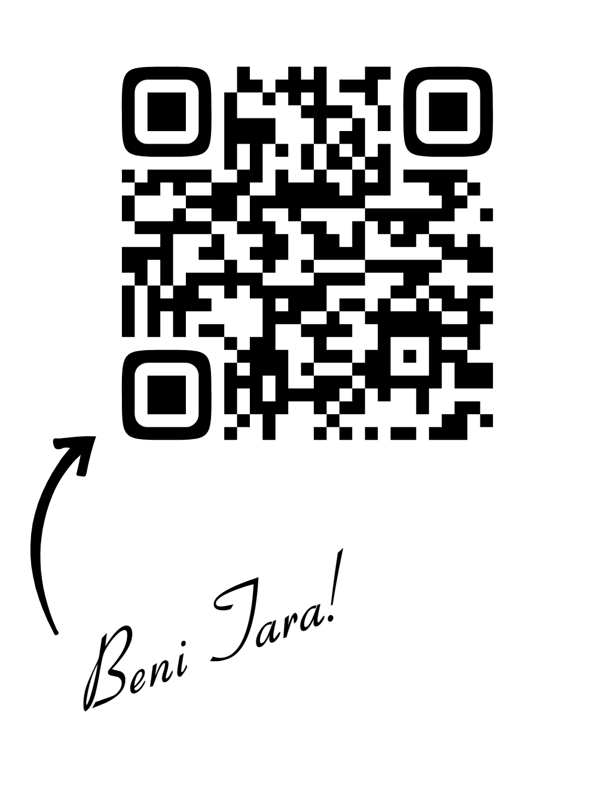

Gezdigim Yerler
- Antalya
- Mersin
- Adana
- Diyarbakır
- ŞanlıUrfa
- şırnak
- Batman/Hasankeyf
- Sinop
- Samsun
- Ankara
Gezmek İstedigim Yerler
- İzmir
- Çanakkale
- İstanbul
- Kristal Mağara, Skaftafell, İzlanda
- Wisteria Tüneli, Kitakyushu, Japonya
- Lavanta Tarlaları, Provence, Fransa.
- Plitvice Gölü, Hırvatistan.
- Ki Manastırı, Himalayalar.
- Eyfel kulesi,Paris
- Blue Lagoon, İzlanda.
Eğlenceli bilgiler kısmı
CV veya Linkedlin sayfamı hızlıca tarayarak bulabilirsiniz

Projelerim
Basit Hesap Makinesi
JavaScript ile Gelistirdigim ilk mini projemdir.
Dijital Saat
HTML ile yapısı,CSS ile tasarımı,JS ile sürekli Guncellenen Saat
TO-DO-LİST(Yapilacaklar Listesi)
Görev ekleme,silme,tamamlama özellikli
Arka Plan Rengi Degistirici
Butona tıklayınca sayfanın arka plan rengini degistir
Basit Wep Sayfası-Hakkımda
HTML ve CSS ile kendini tanıtan bir kişisel sayfa
Tahmin Et Oyunu
Rastgele bir sayı tutar, kullanıcı tahmin eder.JS ile geri bildirim verir